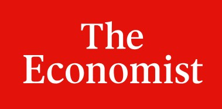

News & Updates
Recent Updates
2026
- April The Economist features "Never Enough".
- Delivering the Griffin Lecture at U Melbourne.
- March Coverage in VoxEU and The Spectator on "Never Enough" about status incentives and German fighter pilots.
- AER Excellence in Reviewing Award.
- Talk at UBC Vancouver.
- February Swiss AI research grant for 50,000 GPU hours.
- January Out in AEJ: Applied: "Highway to Hitler" (with Nico Voigtländer).
2025
- November Presenting "Never Enough" (with Ewan Rawcliffe and Leo Bursztyn) at U Chicago Behavioral Economics Conference.
- September Presenting "Legacy on Deck" (with Guo Xu) at U Chicago AI in Social Science Conference.
- August Talks at the Econometric World Congress: "American Life Histories" and panel on publishing in economics.
- May Talk at the Brown Long-Run Growth Conference.
- April Podcasts with Steve Davis and Tim Phillips on "American Life Histories".
- Talks at Harvard and BU.
- March Talks in Utrecht, Stockholm, and Brown.
- February Talk at the Econ Hist Group in Oxford.
- Talk at EIEF, Rome.
2024
- November Talk at the PE Group in Oxford.
- Talk at U Bocconi.
- September Presenting "American Life Histories" at the Becker-Friedman Conference on AI in the Social Sciences.
- July NBER-SI talk on "American Life Histories".
- June Talk at LUISS, Rome.
2023
- May Talks at U Chicago and NWU-Kellogg.
- April Presentation on "Image(s)" at the NBER Cultural Economics Spring Meeting.
- March Seminar at UNSW, Sydney.
- Visiting Monash Business School in Melbourne.
- January The Economist features "Fighting for Growth" and "Slavery and the British Industrial Revolution".
- Keynote at the First Bolzano Workshop on Historical Economics.
- Out in American Political Science Review: "Collective Remembrance and Private Choice" (with Vicky Fouka).
- Out in Quarterly Journal of Economics: "New Deal, New Patriots" (with Bruno Caprettini).
2022
- December Out in Journal of Finance: "Financial Crises and Political Radicalization" (with Doerr, Gissler, Peydro).
- October Out in Review of Economic Studies: "Killer Incentives" (with Ager, Bursztyn, Leucht).
- September Elected Fellow of the Econometric Society.
- July Keynote at ACES Summer School in London on "The End of the End of History".
- May Out in Explorations in Economic History: "Sweet Diversity" (with Jonathan Hersh).
2021
- September Podcast interview with Tim Phillips on "Going Viral".
- July Delivering the 2nd Annual Crafts Lecture at the Warwick Summer School.
- Out in PNAS: "The Long Run Effects of Religious Persecution" (with Drelichman, Vidal-Robert).
2020
- October Out in American Economic Review: Insights: "Rage Against the Machines" (with Bruno Caprettini).
- March The Economist profiles my work on pandemics and economic growth.
In the News
-

-
-
Tim Harford, February 2026
-
-
-
-
-
-
-
-
VoxEUPodcast, January 2023
-
TradeTalksPodcast, December 2022
-
-